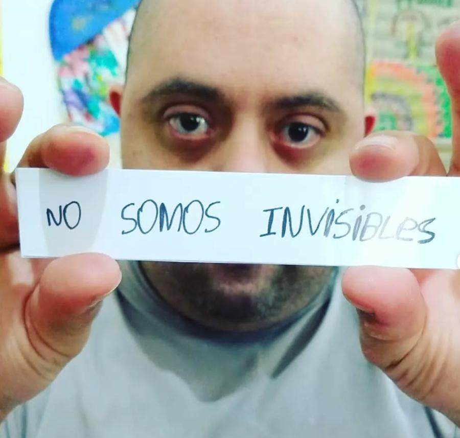
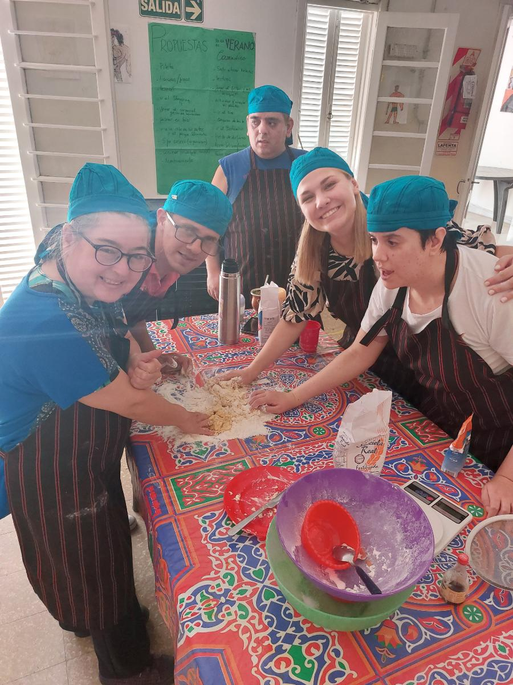
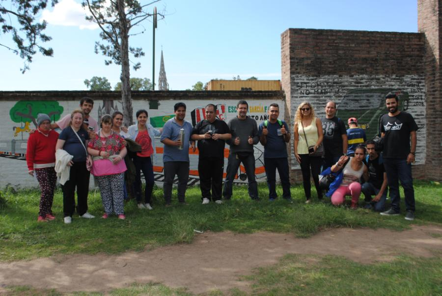
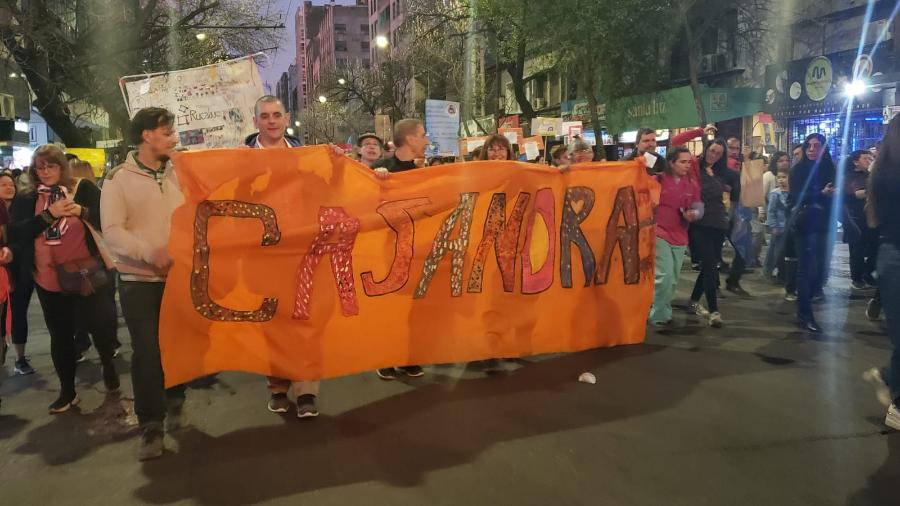

Casandra es una asociación civil sin fines de lucro con el objetivo de asistir, capacitar e investigar en problemáticas graves en salud mental, particularmente en lo que concierne a la “locura” y su relación con la discapacidad.
Nos mueve revertir la exclusión
Nos caracteriza una mirada crítica a los modelos predominantes que conforman la llamada salud mental. Consideramos que estas problemáticas requieren un abordaje desde el ámbito de la salud con proyección hacia lo comunitario.
Apuntamos siempre a la inclusión de las personas que atraviesan estas dificultades, ya que muchas veces su estar en el grupo familiar y el seno social es objetivado, -excluido de subjetivación- es decir, su palabra no es valorada ni escuchada.
Esta situación nos lleva a participar no solo en su asistencia sino también en la promoción social y defensa de los derechos de los sujetos y familiares, así como atender las situaciones de exclusión educativa y laboral.